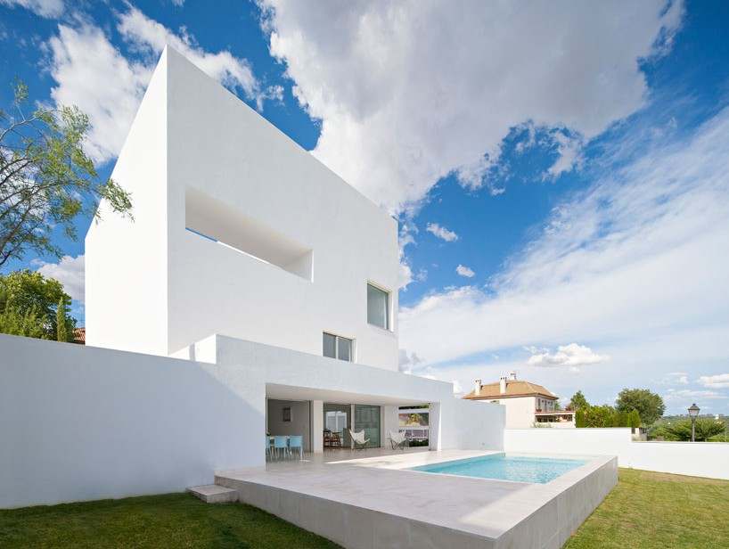

Proyecto destacado: Casa Horizonte
Algunos dirían que es el aire fresco, la paz y la tranquilidad, y algunos la cercanía constante a la naturaleza; sin embargo, todos estamos de acuerdo en que hay algo único en el campo. Al entrar en una casa de campo, todas estas cualidades se pueden reflejar a través del lente del diseño de interiores contemporáneo, creando un ambiente acogedor, luminoso y tranquilo. Conocidas por su ubicación en entornos rurales o agrícolas y diseñadas para vivir en la granja, las casas de campo tradicionales de 1700, inicialmente fueron influenciadas por sus condiciones geográficas, mejorando la relación con el medio ambiente.